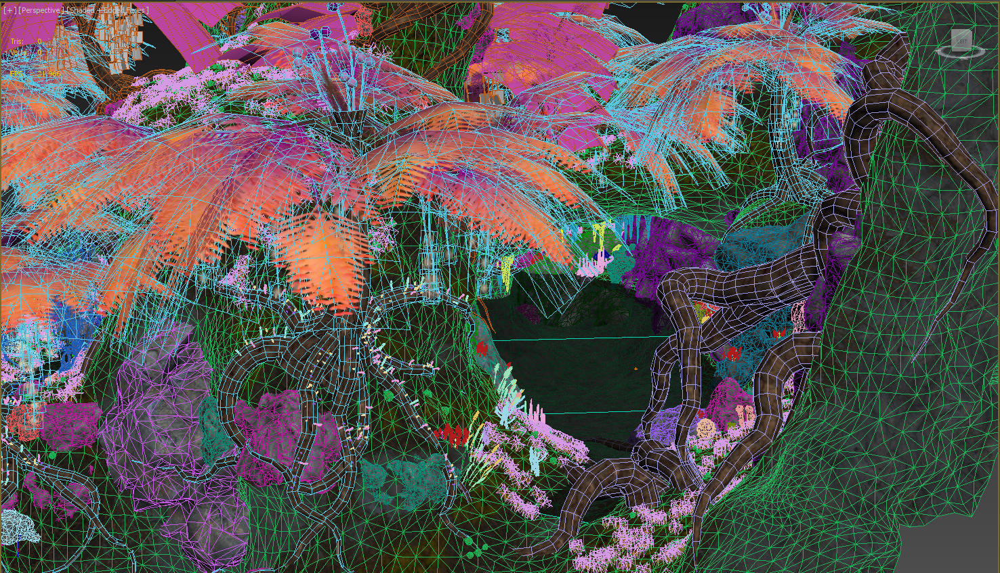
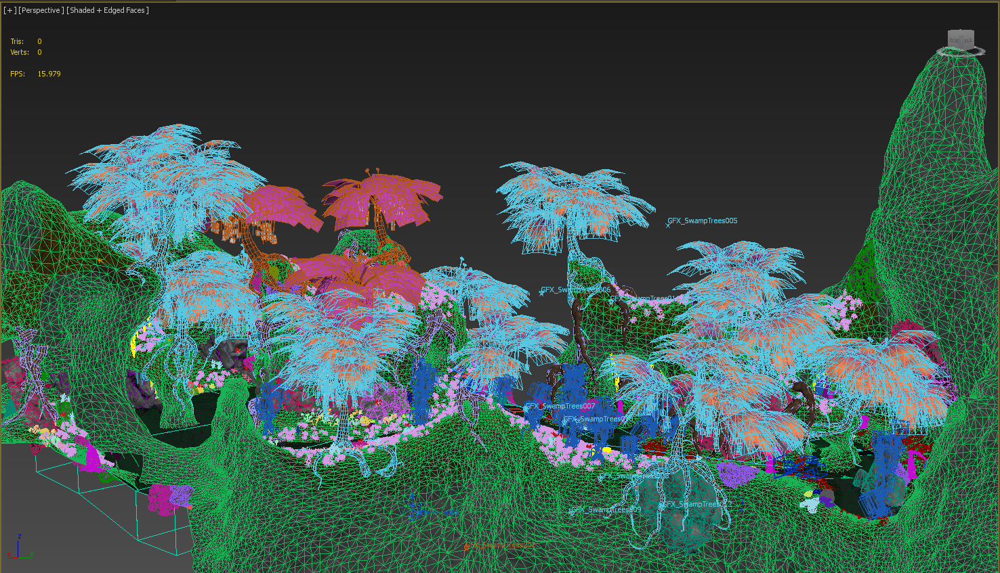
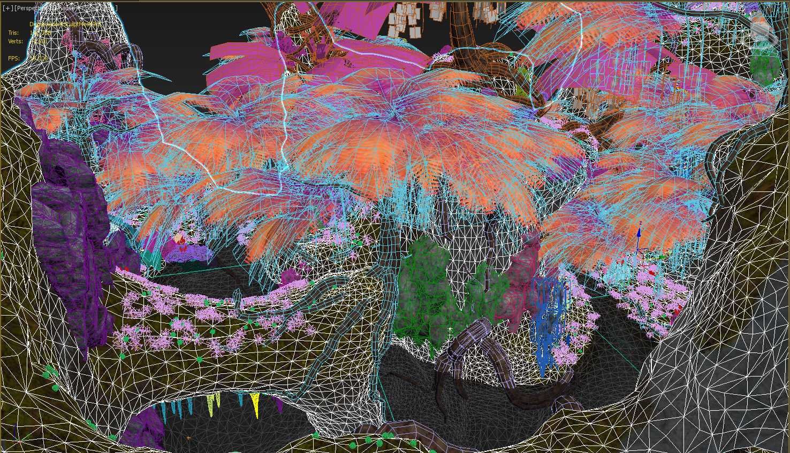
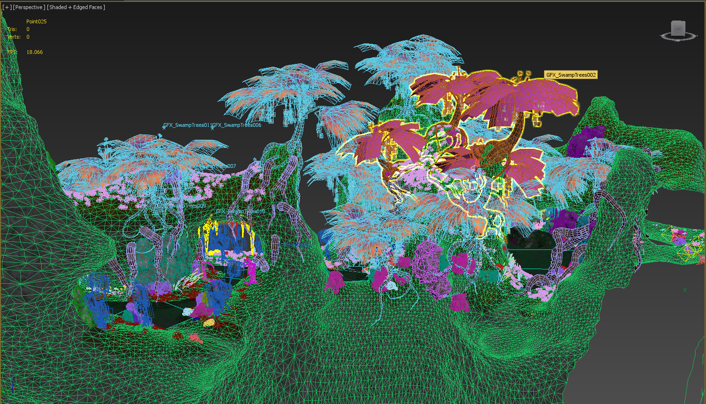
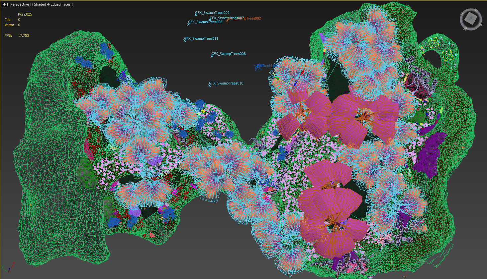

Going to do things a bit different than what I usually do, I’ll give some background on how we are doing the levels and then show some of the small props I have been making. So we posted new images today to go along with the summer sale showing new images from the map Xen. C4a1a which is where all the images have come from so far (except for my wire frame shots) is a desert like area that is quite rocky and has many different islands. Adam, Shawn and I have been detailing the map using 3dsmax and a plug-in called WallWorm (WW) developed by Shawn Olsen (a team member and creator of the program, buy it it is great you will need Max though). Our process is to import a vmf that a LD has already made and has been divided up into a instance for ease of bringing back into hammer later. Once in Max we can turn all the displacements into a sculpt mesh and sculpt it very easily. We also can vertex paint 4way blended textures onto the mesh. We also can sculpt the mesh to form around pretty much anything. Our next task is to place and scatter various props around that need to added to specific areas. We use an importer from WW to import either single source .mdls or large numbers of them into the scene. We can either place each prop by hand or use one of paint functions to paint props on the mesh or just shift drag them (copying them) . This is a pretty intensive process, but can be quite fun. We have rocks that are modular and can be rotated around to look different. We also have some large rock props that are used to cover larger areas. These all match our base rock texture.There is then a foliage pass that is either hand placed or in the case of the grass and some other plants scattered using a powerful program called forest. Once every thing is finished we collapse back to displacements, group props, cull polys, create collisions for the new groupings and export the vmf. The LD then takes and tweaks it all doing the optimizing,lighting scripting etc. By using this pipeline we can get really natural looking vegetation and rock formations. These end up being a lot more dense than doing it in hammer.
Here are a small sampling of the models I made to be scattered around in Xen.
These are the shots used in the media release just a bit bigger. Tree textures are just placeholder.




An overhead shot of this small portion of C4a1b.



{kind=link}